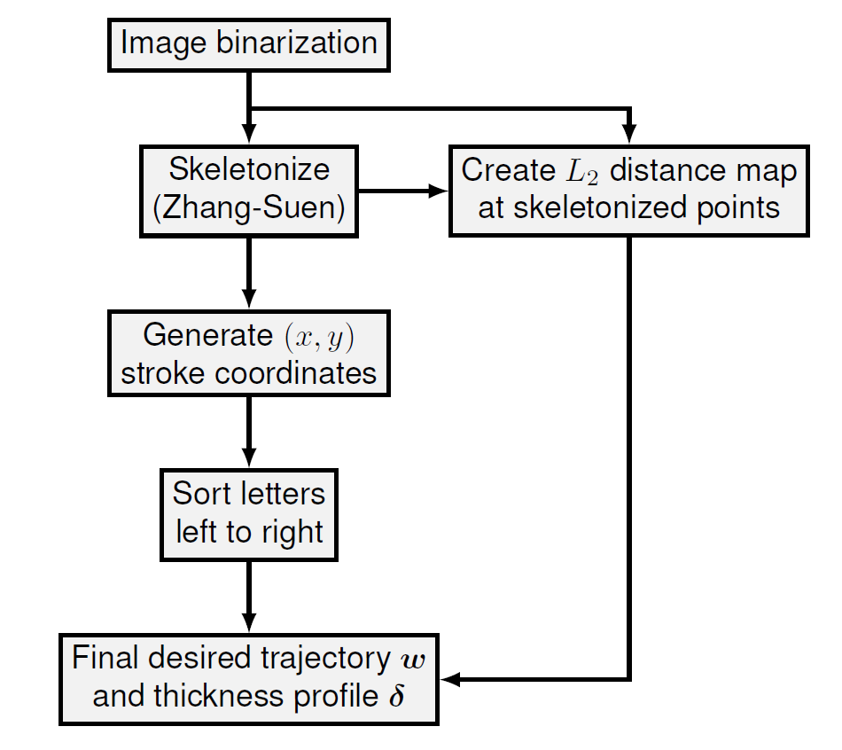
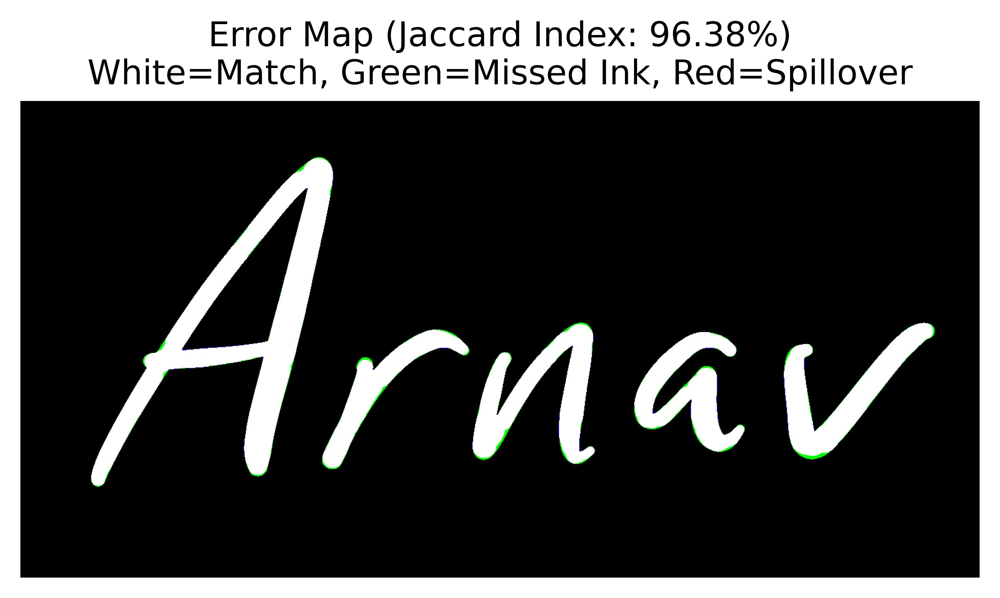

Human-like Handwriting Using a 7-DOF Robotic Manipulator
The goal of this project was to develop an algorithm to recognize samples of human handwriting and replicate the pen strokes using a Franka Emika Panda 7-DOF Robot Arm simulated in PyBullet. This served as the final project for our class 16-741 Mechanics of Manipulation in the Robotics Institute at Carnegie Mellon University. An accompanying final paper was written that you can find here that delves into further detail of our computer vision algorithm and model predictive control development. Source code containing all data, experiments, and analysis is made available at here.
We created a computer vision-based trajectory generation approach that models not only the pen stroke trajectory but also the desired stroke thickness. To track the generated trajectories, a PD force controller is used to modulate the pen stroke trajectory for thickness tracking, and the modulated trajectory is tracked by a model predictive controller using linearized task-space kinematics. The resulting pipeline achieves a success rate of 82.35% on handwriting excerpts from our custom dataset, which includes both print and cursive text with varying stroke thickness.
Project Walkthrough
Computer Vision Pipeline
To enable precise force modulation, a computer vision pipeline was developed to simultaneously extract the spatial trajectory w and the local stroke thickness δ from the input image

CV Pipeline Evaluation
To validate the fidelity of the trajectory generation pipeline, a comparative analysis was conducted between the ground truth binarized image A and the reconstructed stroke geometry B on 17 different handwriting excerpts written on an iPad. Quantitatively, geometric congruence was measured using the Intersection over Union (IoU) metric, formally known as the Jaccard Index J(A,B). Qualitatively, a difference map was generated to visualize discrepancies.
